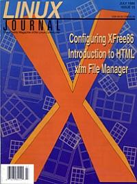

Shutdown Archive web server
Search:
Linux Journal
Issue #15/July 1995

Features
The LINCKS GPD
by Martin Sjolin
The final article in a series on using the CSCW tool in LINCKS.
xfm 1.3: A File and Applications Manager
by Robert Dalrymple
A non-file manager user discovers the usefulness and flexibility of xfm.
HTML: A Gentle Introduction
by Eric Kasten
Learn how to create documents for the World Wide Web in HTML.
Setting up X11
by Greg Lehey
A no-tears guide to XFree86 configuration.
News & Articles
Interview with Orest Zborowski
by Phil Hughes
The Linux File System Standard
by Garrett D'Amore
Reviews
Product Review
AX Graphical Driver
by Mark Banter
Product Review
Metro X
by Bogdan Urma
Product Review
Motif for Linux
by Bogdan Urma
Book Review
X User Tools
by Danny Yee
Columns
Letters to the Editor
Stop the Presses
Linux at Decus
by Michael K. Johnson
Novice to Novice
Games, Sound & Other Agonies
by Dean Oisboid
New Products
System Administration
Installing the Xaw3D Libraries
by Mark Komarinski
Archive Index
Shutdown Archive web server
Search:
Copyright © 1994 - 2018
Linux Journal
. All rights reserved.